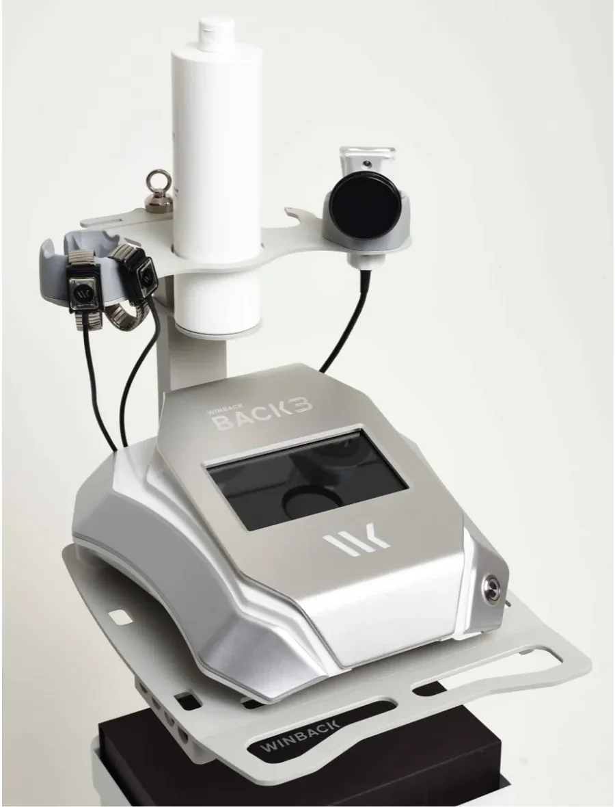

Massage anti-tensions
Presser, puis relâcher.
Un travail ciblé sur les muscles contractés et les points gâchettes, avec pression ischémique et Tecarthérapie quand les tensions sont tenaces.
Le soin
Là où ça se noue.
Le massage anti-tensions, ou massage des tissus profonds, est un ensemble de techniques ciblées. Il vise à détendre les muscles contractés et à relâcher les points de tension, appelés points gâchettes (trigger points).
Ces nœuds musculaires peuvent être liés au stress, à une mauvaise posture, à des efforts répétés ou à un surmenage physique. Ils s'accompagnent souvent de raideurs et d'une gêne dans les mouvements.
On applique d'abord des pressions soutenues jusqu'au relâchement du point. Viennent ensuite le pétrissage, le glissé profond, les étirements ou le drainage, pour redonner de la souplesse au muscle.
Ce massage est particulièrement adapté aux zones de tension fréquentes : dos, nuque, épaules, trapèzes. Selon les tensions, une ou plusieurs séances peuvent être proposées.
Texte reformulé, à valider par BeatLes mentions « soulage les douleurs », « élimination des toxines » et « accélération de la guérison » ont été retirées.
Points gâchettes
Maintenez, puis relâchez.
La pression ischémique consiste à exercer une pression ferme, localisée et prolongée sur un nœud musculaire. Elle bloque un instant la circulation locale. Quand la pression est relâchée, le sang afflue à nouveau dans la zone, ce qui favorise la détente du muscle.
Essayez : maintenez l'appui sur un point de la silhouette. Au clavier, gardez la touche Espace enfoncée.
Maintenez l'appui sur un point pendant deux secondes.

Au cabinet de Nyon, les planches des points gâchettes sont accrochées au-dessus de la table.
Selon les tensions, une ou plusieurs séances peuvent être proposées.
Tecarthérapie
Une chaleur qui va en profondeur.
La Tecarthérapie utilise des ondes électromagnétiques à haute fréquence qui chauffent en profondeur les tissus musculaires, articulaires et conjonctifs. L'appareil intègre aussi des courants Hi-TENS et Hi-EMS.
Intégrée au massage anti-tensions, elle permet d'agir plus profondément sur les zones fortement contractées, en complément du travail manuel.
Texte reformulé, à valider par Beat

- Chaleur en profondeur. Les ondes à haute fréquence réchauffent les tissus musculaires, articulaires et conjonctifs.
- Courant Hi-TENS. Des impulsions brèves et régulières qui stimulent les nerfs.
- Courant Hi-EMS. Des trains d'impulsions qui font travailler le muscle par contractions, puis le laissent se reposer.